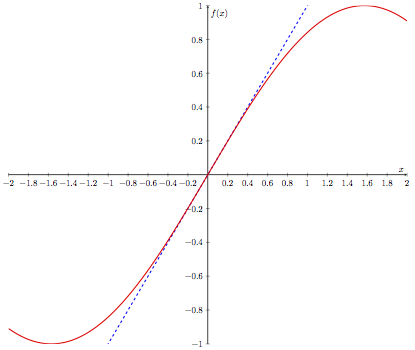

Introduction to Single-Variable Calculus¶
Calculus is a branch of mathematics that develops the concepts, language, and tools that enable us to describe continuous changes in quantities. Among these, the concept of the derivative empowers us to precisely quantify “cause and effect” between phenomena. For example, in physics, the derivative can be used to describe how far a falling object will move if time advances by an arbitrarily-small amount (i.e. it describes the object’s speed). In machine learning, we use the derivative to assess how a minuscule change to a neural network’s mathematical parameters will affect the quality of its predictions. It is difficult to overstate the importance of calculus and its influence on the STEM fields.
This section aims to provide a brief introduction to the concepts from single-variable calculus that will be vital this course. This is not by any means a comprehensive treatment of single-variable calculus; the goal of this section is to provide the reader with a sufficient background and familiarity with derivatives. A lot will be swept under the rug here, as it would be unreasonable to present a full Calculus-1 course-worth of material. The following topics will not be covered here:
limits, continuity, and the formal definition of the derivative.
the product and chain rules (the quotient rule is bad and can always be replaced with these two).
common derivatives (polynomials, exponentials, and sinusoids).
the mean value theorem, intermediate value theorem, L’Hôpital’s rule, and other theorems.
topics that build off of derivatives: integration, differential equations, etc.
That being said, this section will provide:
an intuitive introduction to the derivative
a discussion of notation used to represent derivatives
a handful of applications of the derivative
a table of common derivatives (with no derivation of these)
While it may seem surprising that we can proceed with such a brief treatment of calculus, it will turn out that, thanks to so-called auto-differentiation libraries, these ideas will be all we need to make headway through the rest of this course. As such, auto-differentiation libraries will also be introduced here.
Instantaneous Slope and Derivatives¶
The fundamental idea behind the derivative is slope. As we know from a typical high-school algebra course, the slope of a line tells us how steep said line is, or how quickly the height of the line is changing in relation to our position on the horizontal axis. In particular, the slope tells us the proportion by which our line grows vertically when we vary our position horizontally. A slope greater than \(1\) means that the line grows faster vertically than horizontally, and a slope less than \(1\) (but greater than \(0\)) means that the line grows faster horizontally than vertically. A negative slope means that our line declines along the vertical axis as we move in the positive horizontal direction.
With this idea of slope in mind, let’s consider what it means to find the slope of a non-linear function \(f(x)\) at a given point \(p\). If we only look at a (infinitesimally) small interval surrounding \(p\), we would see that the function resembles a line in this tiny neighborhood. To measure the slope of this apparent line, within this small interval, is to measure the so-called instantaneous slope of \(f(x)\) at \(p\). This is perhaps best illustrated as below, where we are measuring the instantaneous slope of some function at \(x = 1.93\).

From afar, the bends of this function seem to preclude us from identifying any sort of line whose slope we can measure. However if we “zoom in” close enough, we see that the function does indeed look linear; in the small neighborhood around \(x=1.93\), we can measure the instantaneous slope of \(f(x)\) to be roughly \(0.164\).
The (Informal) Definition of a Derivative¶
The derivative of a function \(f(x)\) is another function, which we can denote as \(f'(x)\), that “stores” the instantaneous slope of \(f(x)\) for any and all values of \(x\). For example, supposing we have access to \(f'(x)\) for our function, evaluating \(f'(2.5)\) will tell us what the instantaneous slope of \(f(x)\) is at \(x = 2.5\). The key point here is that the derivative of a function is itself a function.
Let’s take a look at a few simple examples to get comfortable with this idea. Take the linear function \(f(x)=2x\). Since \(f(x)\) is simply a line, it has the same slope everywhere. This then means that the derivative of \(f(x)\) is the constant function \(f'(x)=2\), since the instantaneous slope of \(f(x)\) is the same at every point. Congratulations, you just computed your first derivative!
Now consider the slightly more complicated function \(f(x)=x\ln(x)\) (red curve), which, along with it’s derivative (blue curve), is depicted below.

Close to \(x\approx0.4\), we can see that the function has a minimum, meaning that a (infinitesimal) change in \(x\) would not affect the function value. This indicates that the instantaneous slope at \(x\approx0.4\) is \(0\), as seen in the diagram above. Thus we would expect to find that \(f'(0.4)\approx 0\). Furthermore, given that \(f(x)\) is a decreasing function on the interval \(0\leq x\lessapprox0.4\), we expect that the instantaneous slope of \(f(x)\) at any point in this interval is negative. Indeed, we see that \(f'(x)\) takes on negative values here. Similarly, \(f'(x)\) will yield positive values for \(x\gtrapprox0.4\), where \(f(x)\) is increasing.
Takeaway:
The derivative of a function \(f(x)\) is itself a function, \(f'(x)\), that indicates the instantaneous slope of \(f(x)\) at any point. Evaluating \(f'(x)\) at a specific point will yield the instantaneous slope of \(f(x)\) at said point.
Since the derivative is related to slope, which is a measure of rate of change, the derivative also indicates how quickly a function is changing. This also means that if the sign of the derivative is positive at a point, then the function is increasing at that point, while if the sign of the derivative is negative at a point, the function is decreasing at that point.
Leibniz Notation¶
Up to now we have used a functional notation for the derivative, i.e. we have written the derivative as the function \(f'(x)\). However, later in our journey through functions of multivariable calculus, we will be glad to adopt the powerful Leibniz notation for derivatives. In Leibniz notation, the derivative of \(f\) is written as
It must be noted that \(\frac{\mathrm{d}f}{\mathrm{d}x}\) is still a function; it is no different than \(f'(x)\). If we wanted to indicate we are finding the instantaneous slope of our function at a specific point \(x=p\), we can use a vertical bar to denote the “evaluated” derivative:
All this vertical bar means is that we first find the derivative (as a function of \(x\)), and then evaluate the derivative at the point \(x=p\). We would have denoted this using the previous notation as \(f'(p)\).
We will primarily be using Leibniz notation to represent derivatives moving forward.
Linearity of the Derivative¶
As briefly mentioned in the discussion of the dot product, an operation is linear if:
we can multiply by a scalar before or after applying the operation: \(\mathrm{d}(cf)=c\mathrm{d}(f)\).
the operation applied to a sum is equal to the sum of the operation applied to each summand: \(\mathrm{d}(f+g)=\mathrm{d}(f)+\mathrm{d}(g)\).
An attentive reader may have noticed I wrote these properties with the operation \(\mathrm{d}\), much like that which appears in our Leibniz notation. We will not go into the details here, but the process of taking the derivative is in fact linear. This means that we can (1) multiply a function by a scalar before or after taking the derivative
and (2) find the derivative of a sum of functions by summing the individual derivatives of the functions
As before, these derivatives are still functions. Multiplying a scalar by a function simply means, when the function is evaluated at a point, multiply the resulting value by the scalar. Adding two functions is similar: once both functions are evaluated at a given point, sum the results.
Common Derivatives¶
Below is a table of common derivatives, as well as a summary of useful rules when computing derivatives. The chain rule, included here for completeness, will also be discussed later. It is not important to have these memorized, as we will often be using auto-differentiation libraries that have been programmed specifically to compute these derivatives.
\(f(x)\) |
\(\frac{\mathrm{d}f}{\mathrm{d}x}\) |
Notes |
|---|---|---|
\(c\) |
\(0\) |
Constant \(c\) |
\(x^n\) |
\(nx^{n-1}\) |
|
\(\cos(x)\) |
\(-\sin(x)\) |
|
\(\sin(x)\) |
\(\cos(x)\) |
|
\(e^x\) |
\(e^x\) |
|
\(\ln(x)\) |
\(\frac{1}{x}\) |
|
\(cg(x)\) |
\(c\frac{\mathrm{d}g}{\mathrm{d}x}\) |
Linearity of derivative |
\(g(x)+h(x)\) |
\(\frac{\mathrm{d}g}{\mathrm{d}x}+\frac{\mathrm{d}h}{\mathrm{d}x}\) |
Linearity of derivative |
\(g(x)\cdot h(x)\) |
\(g(x)\cdot\frac{\mathrm{d}h}{\mathrm{d}x}+h(x)\cdot\frac{\mathrm{d}g}{\mathrm{d}x}\) |
Product rule |
\(g(h(x))\) |
\(\frac{\mathrm{d}g}{\mathrm{d}h}\frac{\mathrm{d}h}{\mathrm{d}x}\) |
Chain rule |
Reading Comprehension: Taking Derivatives:
Using the above table, and the fact that differentiation is linear, find the derivatives of the following functions, and evaluate these at \(x=5\):
\(f(x)=x^3+e^x-2\ln(x)\).
\(f(x)=3+\sin(x)-\frac{1}{2}\cos(x)\)
Uses for the Derivative¶
The derivative is an extremely useful tool that can be leveraged to find the extrema (i.e. maxima and minima) of functions. Recall the earlier example \(f(x)=x\ln(x)\), where we noted that the derivative was \(0\) at the local minimum around \(x\approx0.4\).
This observation – that the derivative vanishes where the function has an extrema – allows us to solve for these points explicitly. In fact, let’s try to find the exact minimum of the function \(f(x)\). If you are familiar with the process of differentiation from a previous calculus course, you can validate this derivative yourself. You may also refer to the product rule in the previous table. I claim, however, that the derivative of \(f(x)\) is
We can now set \(\frac{\mathrm{d}f}{\mathrm{d}x}\) to \(0\), and algebraically solve for \(x\), thus giving us the value of \(x\) for which the derivative vanishes (and hence the function is minimized).
In decimal form, \(\frac{1}{e}\approx0.36\), very close to our initially observed value. If we wanted to know what the value of \(f(x)\) is at the minimum, we could simply plug \(x=\frac{1}{e}\) into \(f(x)\) as
Another useful application of derivatives is that of making linear approximations. In our introduction to derivatives, we imagined zooming in on our function until it appeared linear, and then finding the slope of this line. The idea behind making linear approximations is similar: for a given point, we will say that our function looks close enough to a line that, for a small surrounding interval, we can estimate the function value from our derivative. In particular, for a function \(f(x)\) and a point \(p\), we can approximate \(f(x)\) in a small interval surrounding \(p\) as \begin{equation} f(x)\approx f(p)+(x-p)\cdot\frac{\mathrm{d}f}{\mathrm{d}x}\bigg|_{x=p}. \end{equation}
Let’s look at a brief example. Take the function \(f(x)=\sin(x)\), and consider a region near \(x=0\). I claim that the derivative of \(f(x)\) is \(\frac{\mathrm{d}f}{\mathrm{d}x}=\cos(x)\), in which case \(\frac{\mathrm{d}f}{\mathrm{d}x}\big|_{x=0}=1\). Thus, for this example, we will approximate \(\sin(x)\) as \begin{equation} f(x)\approx f(0)+(x-0)\cdot\frac{\mathrm{d}f}{\mathrm{d}x}\bigg|_{x=0}=\sin(0)+(x-0)\cos(0)=x, \end{equation}
for a small interval surrounding \(x=0\). How accurate is this approximation? We can see in the plot below.

Indeed, our linear approximation appears quite good for small values of \(x\). This idea of using derivatives to make approximations is related to the concept of Taylor series, which are not necessary for this course. We will, however, see later the idea of using derivatives to make linear approximations resurface.
Automatic Differentiation¶
Over the past decade, there has been an explosion of interest in machine learning models known as neural networks. A neural network is a flexible mathematical structure that can tune its own numerical parameters through a process called “gradient-based learning”, to improve its performance on a mathematical modeling task in an automated way. We will discuss gradient-based learning in detail later, but suffice it to say that this process requires that the neural network be able to automatically evaluate derivatives with respect to its mathematical parameters so that it can optimize their values.
The tremendous surge of activity in neural networks and gradient-based learning has led to development of popular and highly-powerful automatic differentiation libraries, such as PyTorch, TensorFlow, and MXNet. These “auto-diff” libraries are able to evaluate the derivatives of arbitrary compositions of a broad range of standard functions, like polynomials, exponentials, and trigonometric functions, expressed across multiple variables. To be clear: an auto-diff library does not produce derivatives of functions, which would require that it produce the a symbolic function as an output (recall that the derivative of a function is another function). Instead, an auto-diff library automatically evaluates the derivative of a function at a given input. It is more appropriate to say that these auto-diff libraries can tell us the instantaneous slope of any function at any point, more so than saying that they can “take the derivative” of any function.
We will get some hands-on experience with an auto-diff library to solidify the foundation in calculus that we have been building.
Introduction to MyGrad¶
In this course, we will be making frequent use of the auto-diff library called MyGrad, which is designed to behave just like NumPy, but with auto-differentiation added on top. If you already have NumPy installed in your Python environment, you can simply install MyGrad with:
pip install mygrad
Let’s jump right in with a simple example of using MyGrad to evaluate the derivative of a function at a specific point. We’ll take our function to be \(f(x)=x^2\), and let’s compute its instantaneous slope at \(x=5\), i.e. \(\frac{\mathrm{d}f}{\mathrm{d}x}\big|_{x=5}\). From the earlier table of derivatives, we know that the derivative of this function is \(\frac{\mathrm{d}f}{\mathrm{d}x}=2x\), thus \(\frac{\mathrm{d}f}{\mathrm{d}x}\big|_{x=5} = 10\). Let’s reproduce this result via auto-differentiation using MyGrad.
We need to begin by creating a mygrad.Tensor. This is MyGrad’s analog to numpy’s ndarray. MyGrad’s Tensor behaves just like NumPy’s array in just about every way that you can think of, e.g. it supports multi-dimensional indexing (both basic and
advanced), reshaping, and vectorized operations with broadcasting semantics, but it is also capable of facilitating automatic differentiation. This Tensor will store the point(s) at which we wish to evaluate our function and its derivative.
# `mygrad.Tensor` behaves like `numpy.array` but it supports auto-diff
>>> import mygrad as mg
>>> x = mg.Tensor(5)
>>> x
Tensor(5)
We can then pass this Tensor into our desired function, thus evaluating the function at the specified point(s). Much like NumPy, MyGrad provides a wide array of mathematical functions that we can apply to Tensors. In this example, our function is \(f(x)=x^2\). We can compute this just as we would with NumPy: either with x ** 2 or with mygrad.square(x).
# evaluating f(5)
>>> fx = x ** 2
>>> fx
Tensor(25)
fx stores the value of our function at the given evaluation points, which in this case is \(f(5)=5^2=25\).
Now we can use MyGrad to evaluate the derivative of \(f(x)\) at \(x=5\). Invoking fx.backward() instructs MyGrad to evaluate the derivative of fx for each variable that fx depends on. We will see in the next section how to differentiate a multivariable function both by hand and with MyGrad. However, in this case, \(x\) is the only such variable.
# trigger auto-differentiation of `fx` with respect to
# all of the variables that it depends on
>>> fx.backward()
The value of \(\frac{\mathrm{d}f}{\mathrm{d}x}\big|_{x=5}\) is stored in the attribute x.grad.
# accessing df/dx @ x=5
>>> x.grad
array(10.)
As expected, MyGrad computes the appropriate value for the evaluated derivative: \(\frac{\mathrm{d}f}{\mathrm{d}x}\big|_{x=5}=2 \times 5=10\). Note that all Tensor instances have a grad attribute, but prior to invoking fx.backward(), x.grad would have simply returned None.
It is important to reiterate that MyGrad never produced the actual function \(\frac{\mathrm{d}f}{\mathrm{d}x}\). As covered in the discussion on functions, when we wish to work with mathematical functions in Python, we must sample the function, rather than manipulate its symbolic form, in our code. Since the derivative is itself a function, MyGrad must sample it, and will do so at whichever points we initially provide. This is a common thread across auto-diff libraries: the derivative can only be computed at specific evaluation points.
Vectorized Auto-Differentiation¶
In accordance with mirroring NumPy’s design, MyGrad supports vectorized operations, allowing us to evaluate the derivative of a function at multiple points simultaneously. Let’s again take the function \(f(x)=x^2\), which has the derivative \(\frac{\mathrm{d}f}{\mathrm{d}x}=2x\). Now, instead of passing in a single number to Tensor, we can pass in a list of values corresponding to all the
points at which we want the compute the derivative. We can then find the instantaneous slope of our function at these points, just as before. First we will pass x into our function of interest, namely \(f(x)=x^2\).
# using vectorized operations to evaluate a function
# at multiple locations
>>> x = mg.Tensor([2.0, -4.0, 1.0, 3.0])
>>> fx = x ** 2
>>> fx
Tensor([ 4., 16., 1., 9.])
Here MyGrad vectorizes the operation, performing it element-wise:
We can elegantly exploit this vectorization to find the derivative of \(f(x)\) evaluated at each point in x by invoking fx.backward(). This will trigger the vectorized computation
which will be stored in x.grad. It is important to recognize that x.grad[i] stores the derivative of fx evaluated at x[i].
# Trigger vectorized auto-differentiation
# Computes the instantaneous slope of
# f(x) = x ** 2 at 2, 4, 1, and 3
>>> fx.backward()
>>> x.grad # df/dx @ x = 2, -4, 1, and 3, respectively
array([ 4., -8., 2., 6.])
As expected, MyGrad finds the appropriate value for the derivative evaluated at each respective element in x.
Takeaway:
Auto-differentiation libraries will compute the derivative of a function at specified points, provided by the user. In MyGrad, Tensors are the building blocks, storing the points at which functions and derivatives will be evaluated. Operations in MyGrad are vectorized, like in NumPy, to make element-wise operations extremely quick. To signal to MyGrad to compute the derivative of a function, invoke backward on the output of the desired function. The derivative evaluated at the original
points will be stored in the grad attribute of the original Tensor, with each element in grad being the derivative of the function evaluated at the corresponding element in the original Tensor.
Visualizing the Derivative¶
The following code block demonstrates how easy it is to visualize a function’s derivative by using MyGrad. Note MyGrad’s Tensor stores a NumPy-array of its data, which can be accessed via the .data attribute. Any time a library needs to be passed a NumPy array, you can access this array from a tensor through this attribute.
Study the plot displayed below: notice that the derivative is always \(0\) when the function has a horizontal slope, and that the derivative takes on a positive value wherever the parent function has a positive slope.
[1]:
import mygrad as mg
import matplotlib.pyplot as plt
%matplotlib inline
def f(x):
return mg.sin(2 * x) * mg.cos(x) * mg.exp(-x / 3) * 100
def plot_func_and_deriv(x, func):
fig, ax = plt.subplots()
x = mg.Tensor(x)
y = func(x)
y.backward()
ax.plot(x.data, y.data, label="f(x)")
ax.plot(x.data, x.grad, ls="--", label="df/dx")
ax.grid(True)
ax.legend()
return fig, ax
x = mg.linspace(0, 10, 10000)
plot_func_and_deriv(x, f);

Seek and Derive¶
Computers equipped with automatic differentiation libraries can make short work of derivatives that are well-beyond the reach of mere mortals. Let’s finish with an example demonstrating how powerful MyGrad is, and why we would want to use it. Take the pathological function \begin{equation} f(x)=e^{(\arctan(82x^3+\ln(x)))}\sqrt{25x^{\frac{1}{22930}}+39e^{\frac{2}{x}}-\sin(x)}, \end{equation}
the derivative of which would be miserable to do by hand. Thankfully we can have MyGrad compute the derivative at a collection of points for us, just as we did before (using vectorization)
# Tensor containing the values x = 1, 2, ..., 10
>>> x = mg.arange(1, 11)
# Evaluated function at points x = 1, 2, ..., 10
>>> fx = mg.exp(mg.arctan(82 * x ** 3 + mg.log(x)))
>>> fx *= mg.sqrt(25 * x ** (1 / 22930) + 39 * mg.exp(2 / x) - mg.sin(x))
>>> fx.backward()
>>> x.grad # df/dx evaluated at x = 1, 2, ..., 10
array([-7.44764313e+01, -1.09475963e+01, -3.78281290e+00, -1.86451297e+00,
-1.29207692e+00, -1.07197583e+00, -7.90459238e-01, -3.96212428e-01,
-8.16203127e-02, -3.17648949e-02])
Even though it would be a pain to differentiate \(f(x)\) by hand, MyGrad can handle taking the derivative with no problems. To find the derivative of a complex function, we simply must chain together the relevant functions and sit back – MyGrad will handle the rest. It accomplishes this feat by dutifully applying the chain rule over and over, using a simple algorithm called “back-propagation”. The authors of MyGrad had to write down the symbolic derivative for each elementary function (e.g., \(e^x\), \(\sqrt{x}\), \(\arctan(x)\), etc.), but MyGrad’s code is responsible for systematically carrying out the chain rule to evaluate derivatives of arbitrarily-complex compositions of these functions.
Reading Comprehension: Auto-differentiation:
Using MyGrad, compute the derivatives of the following functions. Have MyGrad evaluate the derivatives on the interval \([-2,4]\) at \(30\) evenly spaced points using mygrad.linspace. Additionally, plot these functions and their derivatives on the same domains, but using more densely-spaced points
\(f(x)=\frac{e^x}{e^x+1}\)
\(f(x)=e^{-\frac{(x-1)^2}{10}}\)
\(f(x)=\frac{\sin(x)}{x}-x^2\)
\(f(x)=9\sqrt{1+\frac{x^2}{9}}-9\)
Reading Comprehension Exercise Solutions¶
Taking Derivatives: Solution
Using the table, the derivative of the first function can be found as
Thus, \(\frac{\mathrm{d}f}{\mathrm{d}x}\big|_{x=5}\) can be computed as
The derivative of the second function can be found as
Evaluating the derivative at \(x=5\),
Auto-differentiation: Solution
[2]:
def f(x):
return mg.exp(x) / (mg.exp(x) + 1)
x = mg.linspace(-2, 4, 30)
fx = f(x)
fx.backward()
x.grad
[2]:
array([0.10499359, 0.12233146, 0.14104602, 0.16067062, 0.18052503,
0.19972311, 0.21721938, 0.2319002 , 0.24271321, 0.2488147 ,
0.24970297, 0.24530344, 0.23598166, 0.22248044, 0.20579899,
0.18704635, 0.167303 , 0.14751557, 0.12843546, 0.11059942,
0.09434168, 0.07982542, 0.0670819 , 0.05604927, 0.04660642,
0.03859972, 0.03186277, 0.02622978, 0.02154407, 0.01766271])
[3]:
plot_func_and_deriv(mg.linspace(-2, 4, 1000), f);

[4]:
def f(x):
return mg.exp(-(x - 1) ** 2 / 10)
x = mg.linspace(-2, 4, 30)
fx = f(x)
fx.backward()
x.grad
[4]:
array([ 0.2439418 , 0.25603855, 0.2649823 , 0.27016051, 0.2710269 ,
0.26713309, 0.25815818, 0.24393438, 0.22446663, 0.19994461,
0.1707458 , 0.13742886, 0.10071733, 0.06147402, 0.02066753,
-0.02066753, -0.06147402, -0.10071733, -0.13742886, -0.1707458 ,
-0.19994461, -0.22446663, -0.24393438, -0.25815818, -0.26713309,
-0.2710269 , -0.27016051, -0.2649823 , -0.25603855, -0.2439418 ])
[5]:
plot_func_and_deriv(mg.linspace(-2, 4, 1000), f);

[6]:
def f(x):
return mg.sinc(x) - x ** 2
x = mg.linspace(-2, 4, 30)
fx = f(x)
fx.backward()
x.grad
[6]:
array([ 3.5 , 3.08231909, 2.88185434, 2.87154224, 2.9562879 ,
2.99759486, 2.85459947, 2.42860038, 1.69642019, 0.72117344,
-0.36375522, -1.39291332, -2.21717854, -2.74695958, -2.97654586,
-2.98223402, -2.89552134, -2.86072901, -2.99117993, -3.3379685 ,
-3.88059233, -4.54104218, -5.21509113, -5.80917978, -6.27018042,
-6.59861798, -6.84225739, -7.07396645, -7.36293903, -7.75 ])
[7]:
plot_func_and_deriv(mg.linspace(-2, 4, 1000), f);

[8]:
def f(x):
return 9 * mg.sqrt(1 + x ** 2 / 9) - 9
x = mg.linspace(-2, 4, 30)
fx = f(x)
fx.backward()
x.grad
[8]:
array([-1.66410059, -1.53913231, -1.40226235, -1.25319963, -1.09198696,
-0.91909001, -0.73547021, -0.54262408, -0.34257202, -0.13778548,
0.0689473 , 0.27470313, 0.47662691, 0.6721239 , 0.85901208,
1.03561618, 1.20079858, 1.35393517, 1.49485163, 1.62373797,
1.74105718, 1.8474593 , 1.9437076 , 2.03061964, 2.10902314,
2.1797249 , 2.24349055, 2.30103263, 2.35300473, 2.4 ])
[9]:
plot_func_and_deriv(mg.linspace(-2, 4, 1000), f);